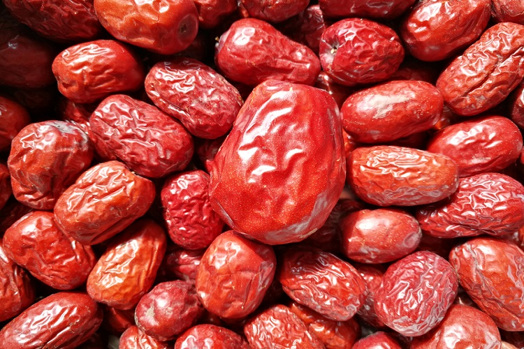
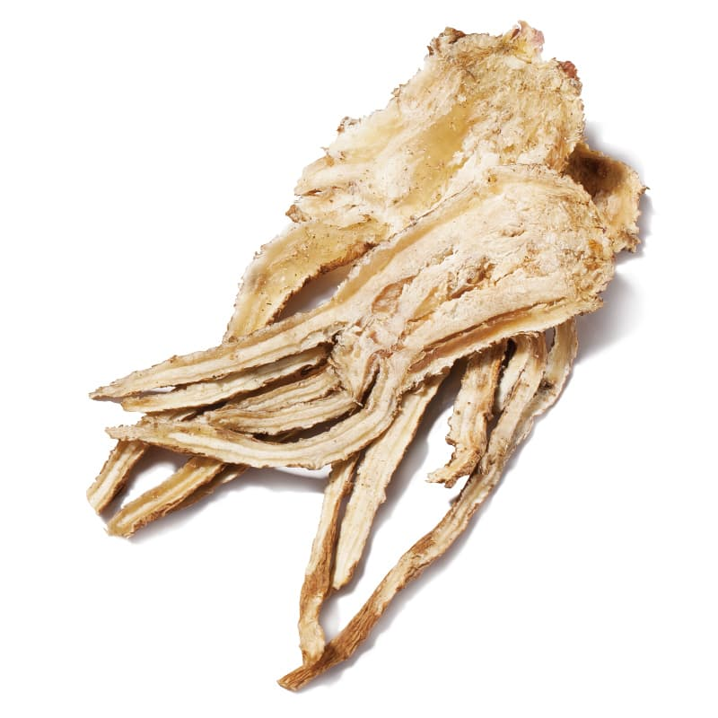
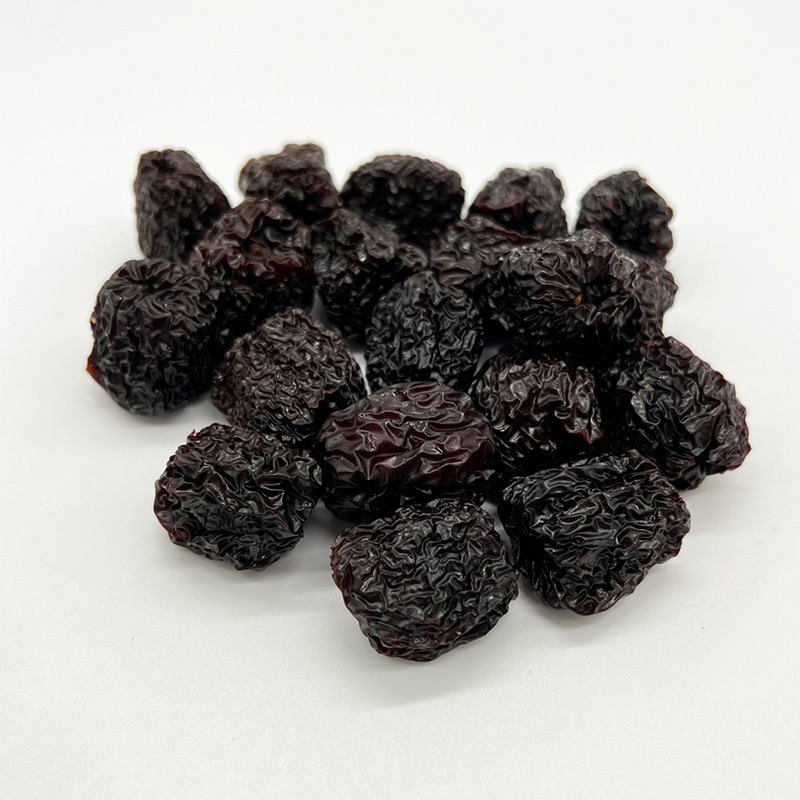
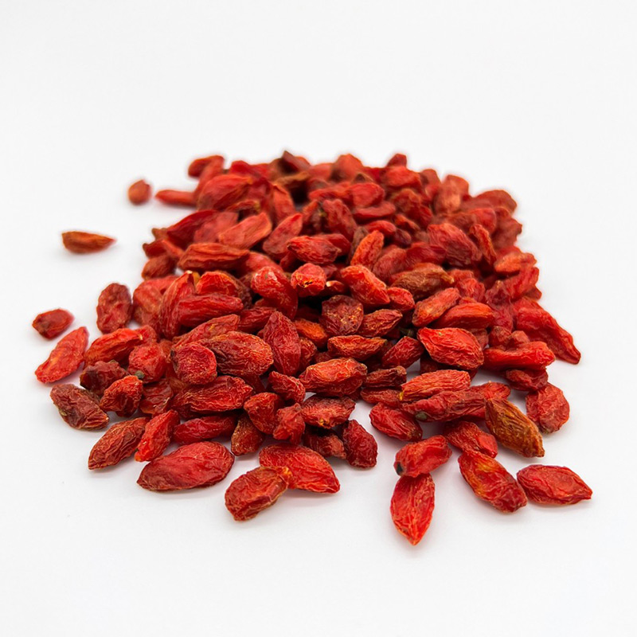

以下為常見藥材之「傳統用途簡述」，實際仍需依體質、季節與用量調整；若有慢性病、孕哺或正在服藥，建議先由中藥師協助評估。

紅棗
常見用於健脾和胃、補氣養血與日常調養；適合搭配茶飲或藥膳增添溫潤口感。

當歸
傳統上多用於補血調理、活血與溫養；常見於藥膳與進補方中作為重要配伍。

黑棗
多作滋補食養使用，口感更沉穩；常見於日常調理與甜湯/藥膳搭配。

枸杞
常見於養肝補益、日常保健與茶飲；多用作配伍增添甘潤與平衡口感。
黃耆
傳統常用於益氣固表、提升元氣與調理體質；亦常見於藥膳湯品的基底配伍。
黨蔘
常見於補中益氣、健脾調養與日常進補；風味較溫潤，適合與黃耆等搭配。
※ 內容為一般性資訊，非醫療建議；實際用藥請以中藥師專業評估為準。